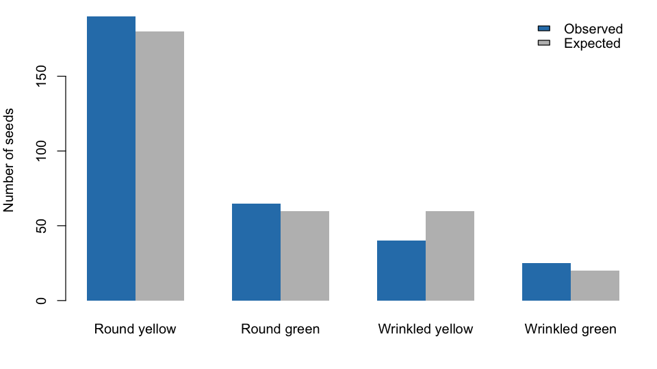
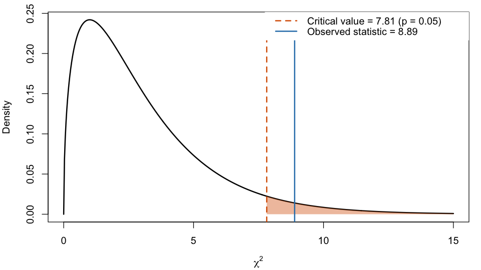

| df | critical_value |
|---|---|
| <int> | <dbl> |
| 1 | 3.84 |
| 2 | 5.99 |
| 3 | 7.81 |
| 4 | 9.49 |
Using the χ2 test to evaluate genetic crosses
BIOL 110 · The Community College of Baltimore County
The chi-square (χ2) goodness-of-fit test tells us whether the difference between what we observed and what we expected is small enough to be explained by chance.
A monohybrid cross of two heterozygotes (Pp × Pp):
| P | p | |
|---|---|---|
| P | PP | Pp |
| p | Pp | pp |
Every χ2 test starts with two competing statements:
We choose a significance level before looking at the data: \(\alpha = 0.05\).
\[ \chi^2 = \sum_{i=1}^{k} \frac{(O_i - E_i)^2}{E_i} \]
Degrees of freedom: \(df = k - 1\)
If \(\chi^2\) is greater than the critical value, we reject \(H_0\).
Data from the Chapter 11 worked example: 78 tall and 22 short plants.
| observed | expected | contribution | |
|---|---|---|---|
| <dbl> | <dbl> | <dbl> | |
| Tall | 78 | 75 | 0.12 |
| Short | 22 | 25 | 0.36 |
Conclusion: we fail to reject \(H_0\). The data are consistent with a 3:1 ratio; the small differences are likely due to chance.
Data from the Chapter 11 worked example: 320 seeds.
| observed | expected | contribution | |
|---|---|---|---|
| <dbl> | <dbl> | <dbl> | |
| Round yellow | 190 | 180 | 0.556 |
| Round green | 65 | 60 | 0.417 |
| Wrinkled yellow | 40 | 60 | 6.667 |
| Wrinkled green | 25 | 20 | 1.250 |

Wrinkled yellow seeds (40 observed vs. 60 expected) account for most of the χ2 value.

\(\chi^2 = 8.89 > 7.81\), so we reject \(H_0\): the data do not fit a 9:3:3:1 ratio.
observed <- c(MM = 363, MN = 634, NN = 282)
n <- sum(observed)
p <- unname((2 * observed["MM"] + observed["MN"]) / (2 * n)) # frequency of M
q <- 1 - p # frequency of N
expected <- n * c(MM = p^2, MN = 2 * p * q, NN = q^2)
round(c(p = p, q = q), 4)
data.frame(observed, expected = round(expected, 1),
contribution = round((observed - expected)^2 / expected, 3))| observed | expected | contribution | |
|---|---|---|---|
| <dbl> | <dbl> | <dbl> | |
| MM | 363 | 361.5 | 0.006 |
| MN | 634 | 636.9 | 0.014 |
| NN | 282 | 280.5 | 0.008 |
The population’s MN genotypes are consistent with Hardy–Weinberg equilibrium.
Your turn: apply the test to the corn-ear counts you collected in Lab 11.
Fisher, R. A. (1936). Has Mendel’s work been rediscovered? Annals of Science, 1(2), 115–137. https://doi.org/10.1080/00033793600200111
Hardy, G. H. (1908). Mendelian proportions in a mixed population. Science, 28(706), 49–50. https://doi.org/10.1126/science.28.706.49
Mateja, G. (2026). Mendelian genetics in corn and chi-square testing. In Introduction to human biology laboratory workbook (Chapter 11). The Community College of Baltimore County.
Mendel, G. (1866). Versuche über Pflanzen-Hybriden. Verhandlungen des naturforschenden Vereines in Brünn, 4, 3–47.
Pearson, K. (1900). On the criterion that a given system of deviations from the probable in the case of a correlated system of variables is such that it can be reasonably supposed to have arisen from random sampling. Philosophical Magazine, Series 5, 50(302), 157–175. https://doi.org/10.1080/14786440009463897
Race, R. R., & Sanger, R. (1975). Blood groups in man (6th ed.). Blackwell Scientific.
R analysis: chisq.ipynb
χ2 testing in genetics · BIOL 110 example presentation